山を訪れる人と、
一緒に道を再生した。
日亜ふるさと振興財団の助成を受け、協同組合 阿波山雅は次郎笈の那賀町側登山道を整備しました。地域団体と連携し、奥槍戸山の家を訪れる登山者延べ45人にも資材運搬を支援していただき、危険区間約400mを整備。標識設置後、道迷いは0件になりました。
滑落10件以上、道迷い20件。危険な登山道を、みんなで直した。
豪雨の影響で荒廃が進んだ次郎笈の那賀町側登山道。草に覆われて足場が見えず、崩れた路肩が滑落を招いていました。奥槍戸山の家への報告だけで年間10件以上の滑落事故、ナビアプリの誤誘導で年間約20件の道迷いが発生していました。
2025年1月から11月、日亜ふるさと振興財団の助成を受けて整備を実施。山櫻プロジェクト会、NPO法人きさわクラブと連携し、奥槍戸山の家のお客さんや登山者延べ45人にも資材運搬を担っていただきました。
整備前と整備後
草に覆われ、路肩が崩れ、滑落の危険があった登山道。整備によって安全に歩ける道が戻りました。
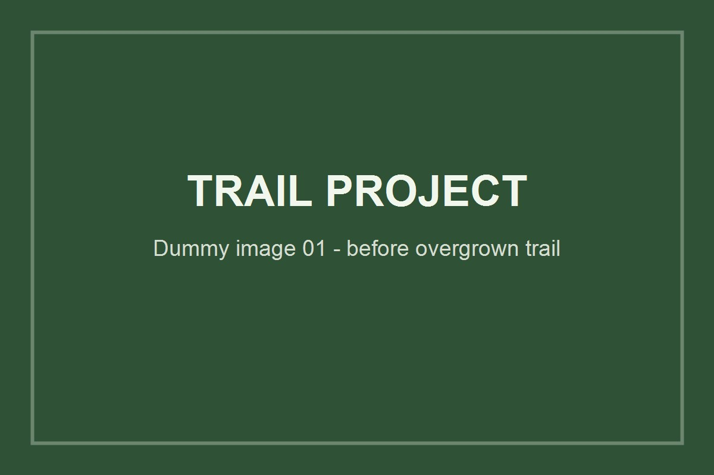
整備前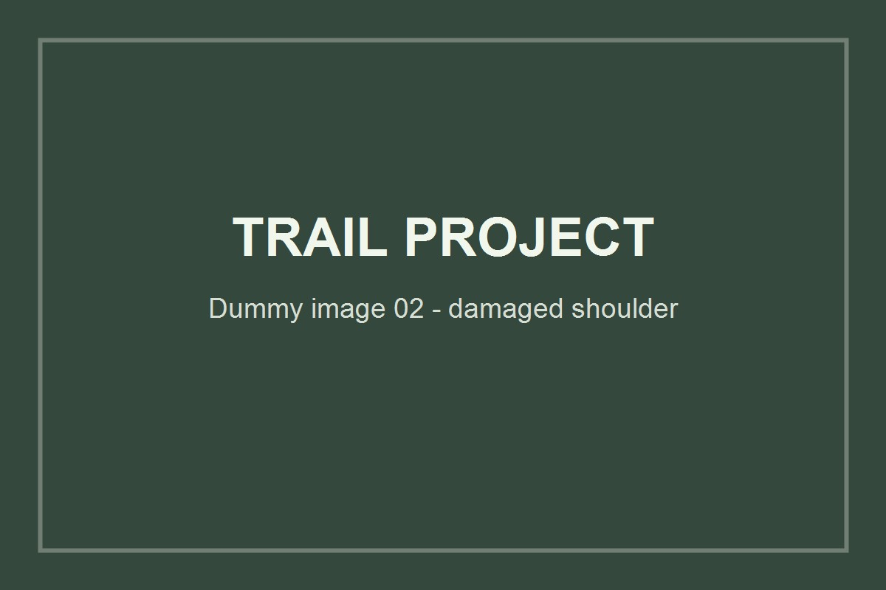
整備前活動の記録
登山者が「山を利用する人」から「山を守る人」として参加できる仕組みをつくった。
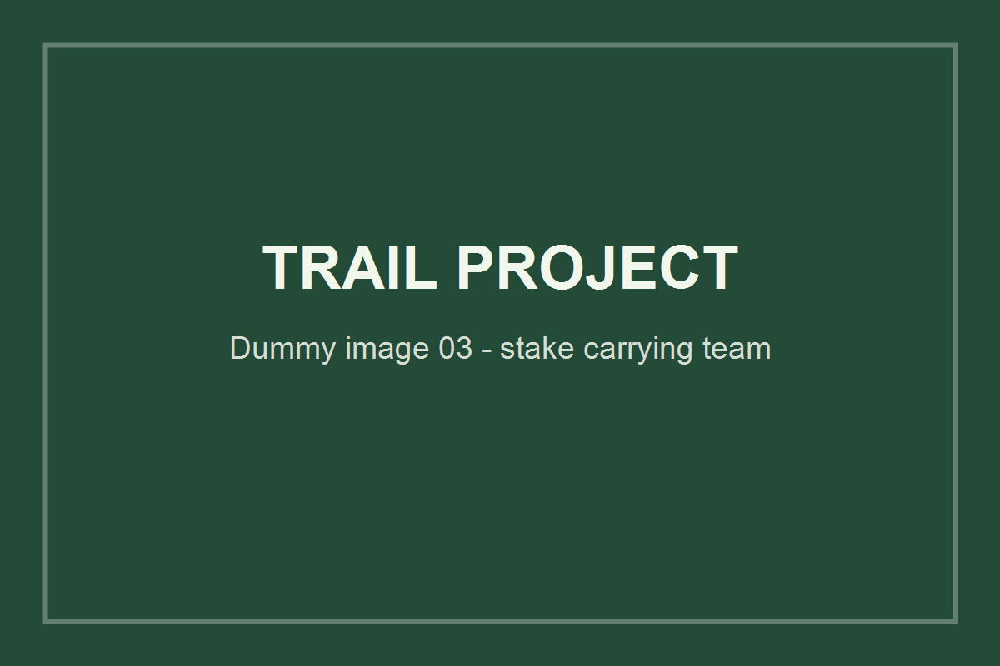
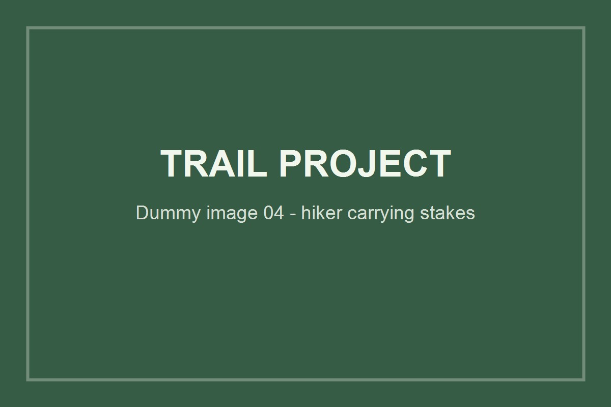
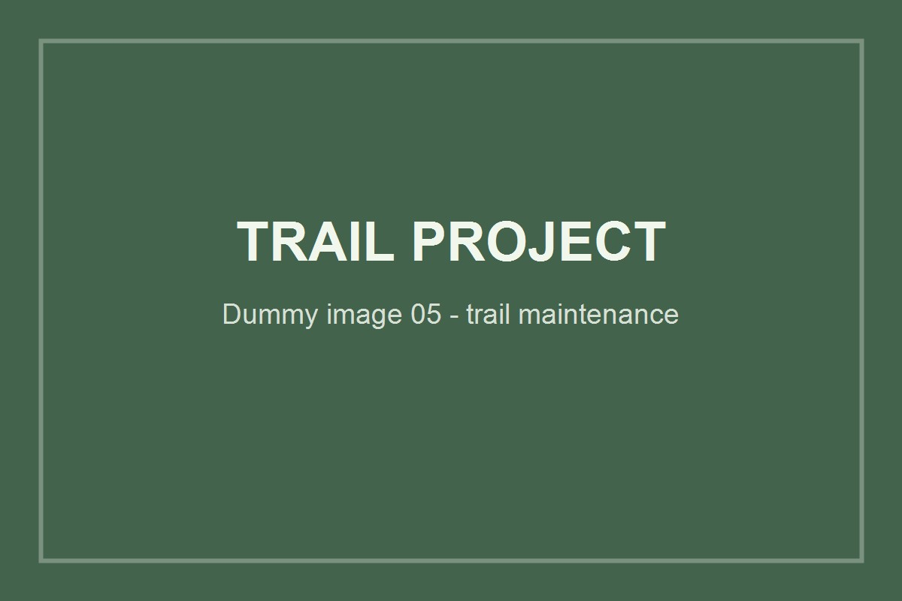
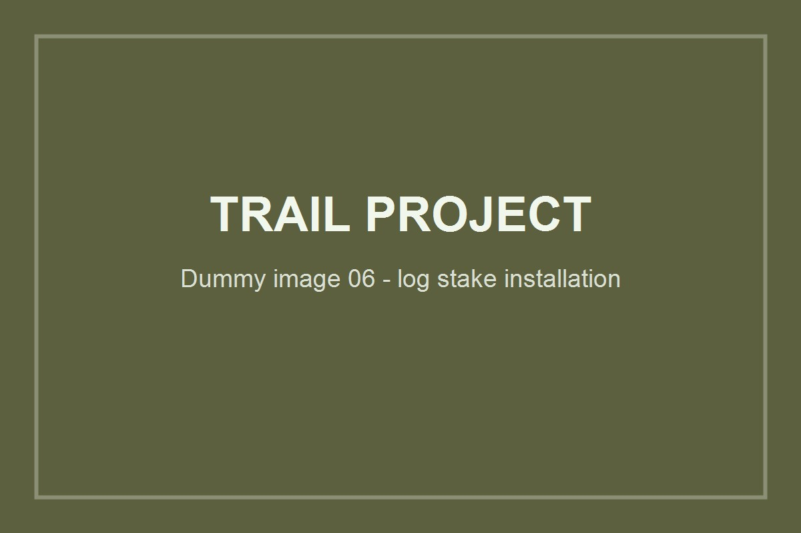
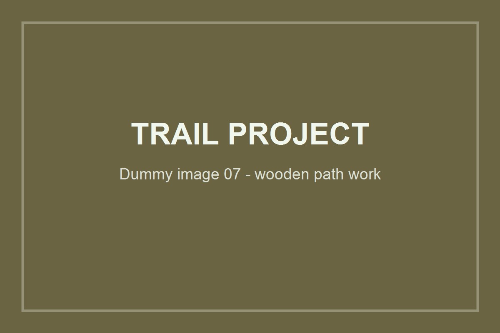
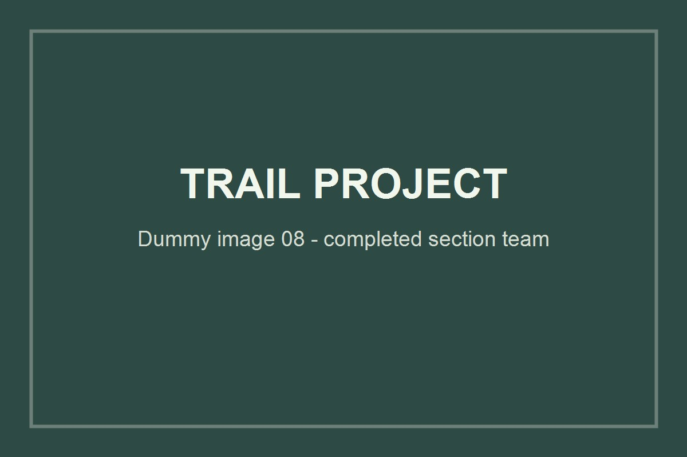
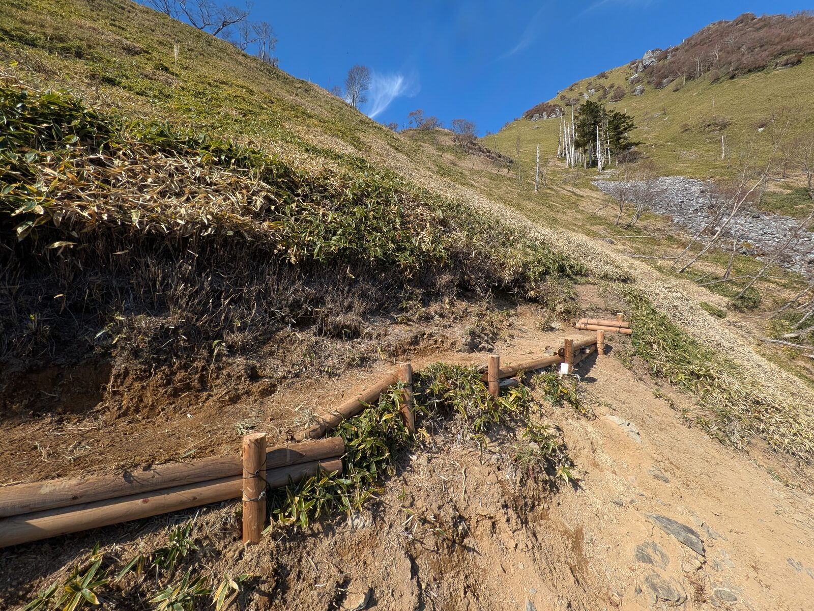
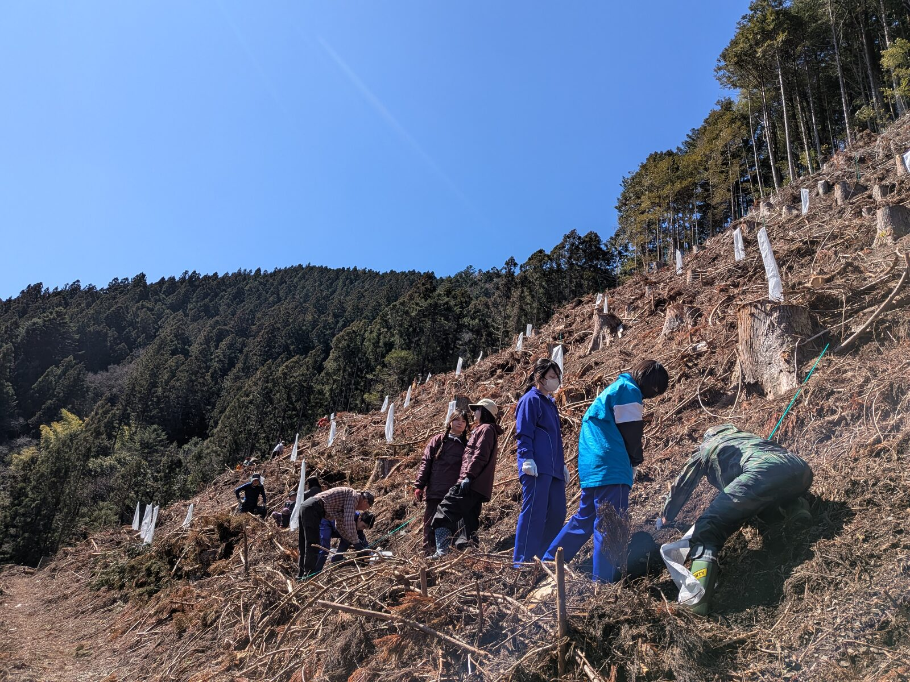
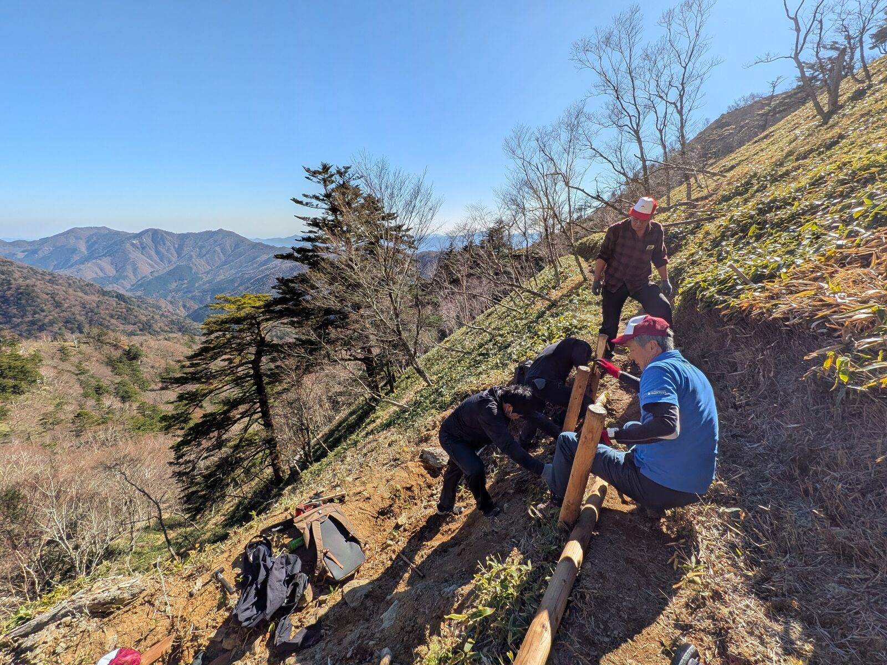
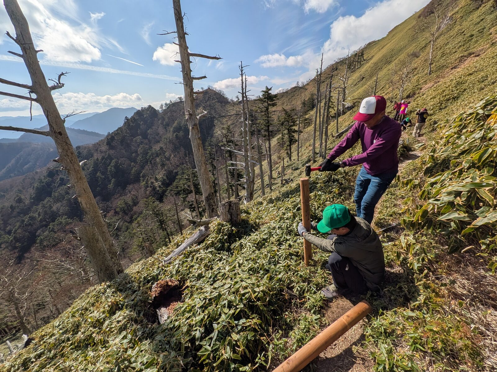
数字で見る成果
成功のポイント
日亜ふるさと振興財団の助成を、具体的な安全対策につなげた
財団の助成によって、整備資材の調達・運搬計画・専門的な指導を伴う作業を実行できました。単発の草刈りではなく、木道・補助ロープ・標識を組み合わせ、滑落危険と道迷いの両方に対応した整備を実現しました。
奥槍戸山の家のお客さんたちが、山を守る仲間になった
SNSを通じて登山者・来訪者へ資材運搬を呼びかけ、1本数kgある杭木を登山を楽しみながら担いで上げてもらう参加方法をつくりました。2025年10月18日には約20人が参加し、同日午後に丸太杭70本の運搬を完了。日亜ふるさと振興財団の視察員も運搬に協力してくださいました。
地域団体・登山者・助成財団をつなぐ役割を果たした
山櫻プロジェクト会、NPO法人きさわクラブ、登山者コミュニティ、日亜ふるさと振興財団と連携し、協同組合 阿波山雅が計画・調整・発信を担いました。奥槍戸山の家という日常的な交流拠点があったからこそ、呼びかけを実際の参加につなげることができました。
連携団体
このプロジェクトが示すこと
助成金と地域の力、そして山の家を訪れる人たちの善意をつなぎ、次郎笈の登山道をみんなで再生したプロジェクトです。
山を楽しむ人が、山を守る活動にも参加できる仕組みをつくりました。奥槍戸山の家を起点に、人のつながりから登山道の安全を生み出すこの活動は、「利用する人と一緒に山を守る」新しいモデルとして続いていきます。